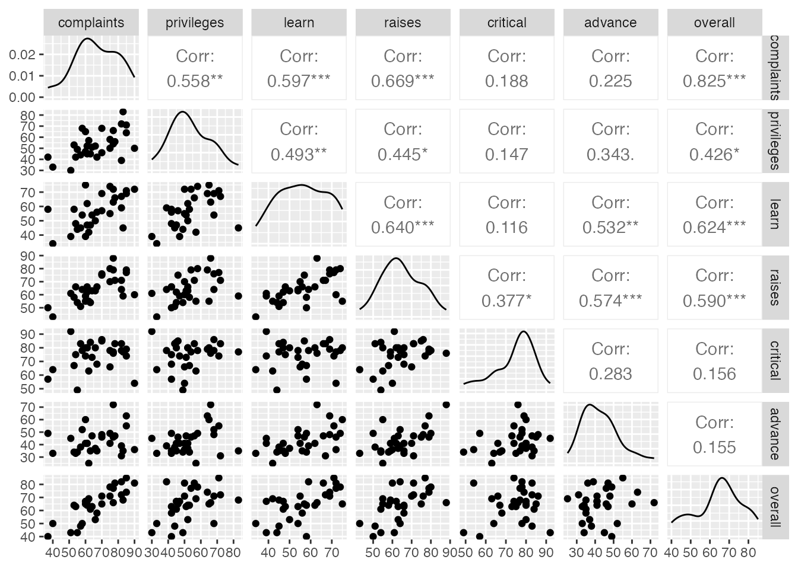

library(ggformula)
library(dplyr)
library(broom)
library(GGally)
supervisor <- read.csv("http://aluby.github.io/stat230/data/supervisor.csv")09: Intro to Multiple Regression
Stat 230 - Spring 2026
Data
In an effort to understand the important aspects of a satisfactory supervisor, clerical employees at a large financial organization were asked to rate their immediate supervisor.
The survey questions were designed to measure overall performance of the supervisor, as well as six additional characteristics.
Employees were asked to rate the following statements on a scale from 0 to 100
(0 = “completely disagree”, 100 = “completely agree”)
Note: this data comes from the textbook
| Variable | Description |
|---|---|
rating |
Overall rating of supervisor performance |
complaints |
Score for “Your supervisor handles employee complaints appropriately.” |
privileges |
Score for “Your supervisor allows special privileges.” |
learn |
Score for “Your supervisor provides opportunities to learn new things.” |
raises |
Score for “Your supervisor bases raises on performance.” |
critical |
Score for “Your supervisor is too critical of poor performance.” |
advance |
Score for “I am not satisfied with the rate I am advancing in the company?” |
Before looking at the data, how do you think each predictor variable will be related to rating? What do you think will have the strongest relationship? The weakest?
EDA: Making a pairs plot
We will use the ggpairs() function in the {GGally} package to make the pairs plot. By default, it will include every variable in the dataset. The code below firsts select()s the columns we want to include (all of them). I have also moved the response variable to be the last in the list, so that it shows up on the Y axis.
supervisor |>
select(complaints, privileges, learn, raises, critical, advance, overall) |>
ggpairs()
- Which predictor variables appear to be most closely related to
overall? - Which predictor variables appear to be most closely related to each other?
SLR
In the code chunk below, choose what you think will be the best single predictor and fit an SLR model. Interpret the intercept and slope coefficient and report the \(R^2\) value.
# your code hereMLR
In the code chunk below, use all predictors and fit an MLR model. Interpret the intercept and slope coefficients and report the \(R^2\) value.
# your code hereCentered/Standardized predictors
Decide whether you think standardized or centered predictors would be more useful here, then fit the MLR model and provide interpretations of the intercept and slope coefficients. Did \(R^2\) change?
# your code herePredicting responses
We can use most our SLR tools for MLR. For example, here’s some code I could use to calculate predictions.
predict(bikes_lm, newdata = data.frame(temp_actual = 90, windspeed = 6))- Use this as starter code to predict the overall manager score for a manager with scores of 50% for all predictors
- What if the manager from the previous question decides to try to improve her
criticalscore by 10 points (so 40% instead of 50%) and hercomplaintsscore by 10 points (so 60% instead of 50%). How does that change the prediction?
# your code hereFunction quick reference
| Function | Purpose |
|---|---|
lm(formula, data) |
Fit a MLR model |
predict(model, newdata, interval, level, se.fit) |
Make predictions and calculate intervals |
data |> select(vars) |> ggpairs() |
Make pairs plot for selected variables |